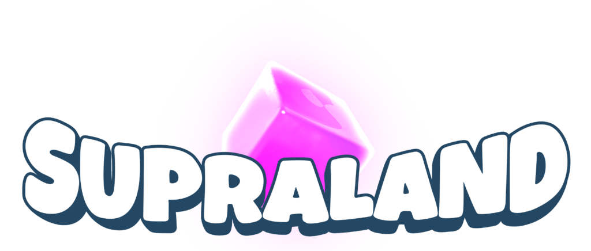

Supraland

| Release Date: | March 9th, 2018 |
| Genre: | 3D Metroidvania |
| Developer: | Supra Games |
| Platform: | Nintendo Switch, Playstation 4, Xbox One, and PC |
| Details: | Steam |
Supraland is a first-person metroidvania game developed by David Münnich. Taking place within a backyard sandbox, you’re tasked with figuring out why your village’s water supply has been tampered with, and set off across the various areas of the sandbox to acquire new abilities to reach the opposing village. It’s a short metroidvania, I only learned about it from it’s OST came up on my Spotify playlist, thought the game looked interesting, and realized the game was already in my library! While the game is a bit lacking in quality, it makes up for that in overall gameplay and approach to fulfilling the metroidvania requirements.
Gameplay
When they describe this game as a combination between Portal, The Legend of Zelda, and Metroid, I’d say they’re pretty accurate. Most progression through the game is locked behind the various skills you can unlock, but how to obtain these are locked behind a multitude of puzzles to solve with your current toolkit. The game doesn’t tend to hold your hand with these puzzles, leaving you with your own curiosity to try different solutions. There’s very little sense of direction outside the minor questline to follow, encouraging you to explore and find these puzzles to begin with.
Exploration is a large focus of this game, with out open-ended it is. While your progression is limited to your current toolkit, there’s plenty of secrets to be found to enhance the stats of your weapons and skills. These upgrades are both hidden away in chests scattered around the world, and purchasable from the shops in the different zones of the sandbox.
Alongside the puzzles throughout the game, you’ll find that platforming is integral to the overall exploration of the game. You’ll unlock a lot of movement options within the first area of the game, which really opens up where you can traverse to. There’s very little “invisible walls” around the map, like I found a way to jump atop the main walls of the world, which felt like I wasn’t supposed to be there, but still managed to find resources up there. It felt freeing to be able to not have the game tell me I couldn’t jump somewhere when I should’ve been able to with my abilities.
Visuals & Audio
The game feels rather unpolished in terms of its presentation. Thematically they’re all tied together, but overall doesn’t feel like as much time was given towards the art of the game in comparison to its gameplay. I’m not sure how else to describe it, perhaps it’s my preference towards sprite-based games, as I feel quality graphics in a 3D environment is much harder to achieve. It’s not bad, just feels lacking.
I can’t say much about the OST of the game, as I’ve turned the music volume way down and have only really listened to the credits song. However, the sound design also felt lacking. Upon grabbing my first coin, the sound of collecting the coin felt identical to many other games, which took me aback for a moment. It makes it feel like the assets were just found floating around somewhere, to give the gameplay some sort of coat of paint.
Overall Thoughts
Overall this game was pretty fun. While lacking in it’s presentation, it makes up for that with it’s level design and the abilities provided to the player. Each major ability felt impactful, adding on a new layer of complexity to the puzzles the game could present. Between these abilities there’s plenty of minor upgrades that could be found and bought to improve existing skills, eliminating the feeling of stagnation in progression.
Exploration is encouraged by the sheer number of secrets scattered around the world, and isn’t hindered by the design of the level. If you can see it, you can get there if your abilities allow it, not arbitrarily set by the developer. It’s a fun short experience that scratches that metroidvania itch, especially with the limited amount that utilize a first-person perspective.